Skylineの使用で質量分析計（マススぺクトロメトリー）の生データはドキュメントにインポートされ、視覚的に表示されます。測定対象となるペプチドとそのMS/MSトランジションの設定、その最適化および積分境界の選択（もしくは修正）も可能です。 SkylineはSRM（selected
reaction monitoring: 選択反応モニタリング）またはMRM（multiple reaction monitoring:
複数反応モニタリング）と呼ばれるマススぺクトロメトリーデータの定量解析ソフトとして開発されたのですが、新たにMS1スペクトルの時間-強度クロマトグラムが抽出できるように機能が拡張され、DDA（data dependent acquisition:
データ依存的取得）モード
で計測されたデータのペプチド定量データも使用できるようになりました。
Skyline MS1フルスキャンフィルタ1は、DDAモードで測定した（ターゲット分析ではなくDiscovery
basedの）プロテオミクスデータセットのインポートを対象としています。生データの
インポート後にSkylineの機能を利用し、複数の測定データファイルのプリカーサーイオンの定量が可能となります。Skylineはデータの視覚化が非常に優れており、安定同位体標識を用いない定量法にも応用が可能となっています。
本チュートリアルではSkylineのMS1フィルタの効果的な利用に不可欠な項目について説明します。
Skylineは質量分析装置を用いたデータ解析のプラットフォームの提供をしており、使用する測定装置（装置メーカー）に依存しない点が大きな特徴（利点）となっています実際Agilent、Bruker、SCIEX、島津製作所、Thermo-Scientific、Watersと市場で見かける大手質量分析メーカーをカバーしており、質量分析装置を使用しているほとんどの研究室で使用可能なソフトです。
本チュートリアルを始める前にzipファイルを以下のリンクからダウンロードしてください。
https://skyline.ms/tutorials/MS1Filtering-22_2.zip
この中のファイルを、コンピュータ上のフォルダへ解凍します。
C:\Users\brendanx\Documents
これにより次の新しいフォルダが作成されます。
C:\Users\brendanx\Documents\MS1Filtering
本チュートリアルを始める前にSkylineをすでに使用していた場合は、Skylineをデフォルト設定に戻してください。デフォルト設定に戻すには、以下の操作を行います。
これでSkylineのドキュメント設定がデフォルトにリセットされました。
本チュートリアルはプロテオミクスに関するものであるため、以下の操作を行うとプロテオミクス用インターフェイスを選択できます。

ウィンドウの右上隅のタンパク質アイコン  が表示されている時はプロテオミクスモードでの動作となります。
が表示されている時はプロテオミクスモードでの動作となります。
この空のドキュメントは多数の方法で編集開始できますが、本チュートリアルではペプチド検索結果の処理、ターゲットペプチドの設定、MS（マススぺクトロメトリー）データファイルのインポートという一連の流れをガイドするフォームを使用します。これをSkylineではウィザードと呼びます。
まずDDAデータのペプチド検索を行うには[ ペプチド検索のインポート ] ウィザードを使用して、ペプチド検索結果をSkylineドキュメントに取り込んでください。
以下の操作を行って新しいドキュメントを保存します。
[ ペプチド検索をインポート ] ウィザードを以下のように開始します。
以下のようなフォームが表示されます。
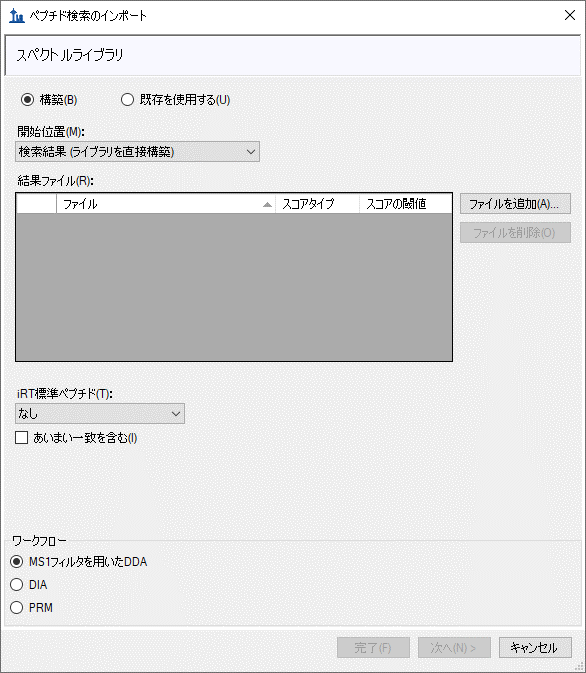
このウィザードを使用して複数のペプチド検索エンジンの
1つからスペクトルライブラリを作成します。サポートされている検索パイプラインの詳細については「ターゲットメソッドの編集」チュートリアルをご覧ください。なお本チュートリアルで使用するファイルは最低限の情報のみを含む縮小版となります。ご注意ください。
以下の操作を行い、検索結果をライブラリに追加します。
ウィザードフォームは以下のようになります。
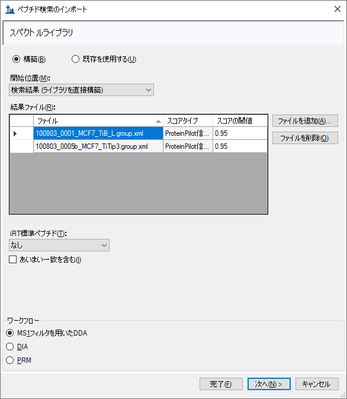
MS1FilterTutorial.skyドキュメントに新たにスペクトルライブラリが構築されます（進行状況が表示されます）。新しいスペクトルライブラリが保存されたMS1Filteringフォルダに以下の2つの新しいファイルが表示されます。

ファイル「MS1FilterTutorial.slc」も表示されます。 これはライブラリの読み込み時間を短縮するためのCacheファイルとなります。これは削除可能ですが必要であれば再度作成もできます。
Skylineをすでに使用していてスペクトルライブラリを構築したことがある場合は.skyファイルと同じ名前のライブラリが作成されます。 これはクロマトグラムのドキュメント保存と同じです。クロマトグラムデータ同様に検索結果の追加や削除が可能です。
ライブラリ構築が完了すると以下のように表示されます。
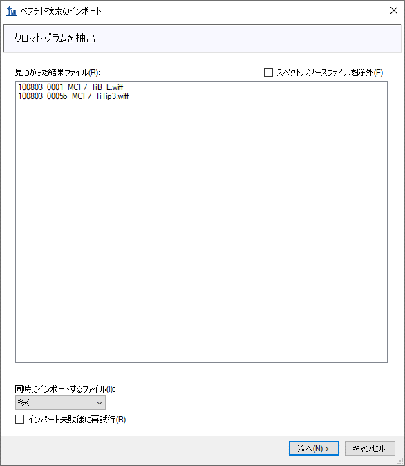
この場合は自動的にライブラリ構築に利用したスペクトルのソースファイルと一致するWIFFデータファイルが見つかります。ライブラリにはMS/MSスペクトル同定の際に必要なクロマトグラムの保持時間情報（retention time）が含まれます。クロマトグラム抽出の際に必要なデータファイルが見つからない場合は検索がSkyline上に表示されます。またライブラリ構築の際にインポートされたペプチド検索ファイル中に保持時間情報が含まれていない場合、同様にSkyline上に表示されます。ペプチド検索結果ファイルからスペクトルソースファイルや保持時間情報を特定する際にエラーが発生することがありますが、そうした問題のトラブルシューティングについて後述の「ライブラリ保持時間の検証」セクションを参照してください。本チュートリアルを続けるため以下の操作を行います。
2つのWIFFファイルに共通のプリフィックスをどう取り扱うかを尋ねるフォームが表示されます。
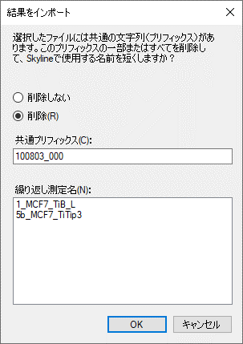
ウィザードは [ 修飾を追加 ] ページに進みます。 ここでは、検索結果では見つかったものの、ドキュメントにはないアミノ酸修飾もすべてリストアップされています。場合によっては、Unimodデータベースサイトでの検索でアミノ酸、質量の組み合わせが一致する修飾が表示されます。
*Unimodとはコミュニティが支援する、質量分析計用途のタンパク質修飾の総合データベースです（https://www.unimod.org）。
本チュートリアルで登場する修飾は、「Phospho (ST)」（SerineもしくはThreonine残基のリン酸化）、「Phospho (Y)」（Tyrosine残基のリン酸化）および「Oxidation (M)」（Methionine残基の酸化）のみです。リストでこれらのチェックをオンにすると、ウィザードは以下のようになります。
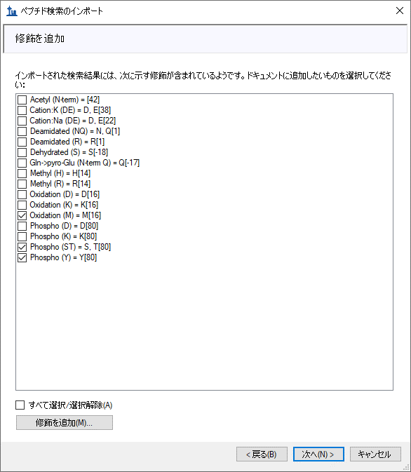
ドキュメントによっては、いくつかの修飾（例: Oxidation (M)）がすでに定義済みで表示が異なる可能性があります。
ウィザードが [ MS1フルスキャン設定を行う ] ページに進みます。そこで以下の操作を行います。
このページの他のフィールドはデフォルト設定のままにしてください。ウィザードは以下のようになります。
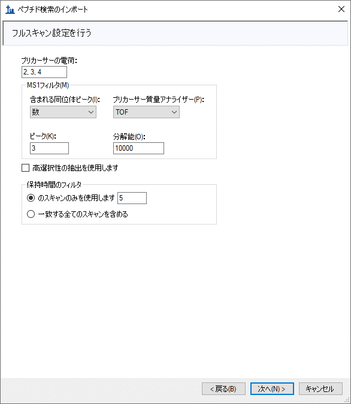
[ MS1フィルタ ]セクションのデフォルト設定は以下のようになります。
|
注：[ 高選択性の抽出を使用します ] チェックボックスをオンにして抽出範囲をFWHMに限定することもできます。夾雑物が多く含まれるような試料での解析には推奨されます。また装置の性能によって分解能も変更できます。 |

Skylineに表示されるクロマトグラム（Extracted ion chromatogram）は各保持時間における選択されたフラグメントイオン（m/z 521.27）の強度となっています。

[ 保持時間のフィルタ ] セクションが[MS/MS ID のスキャンの中で [5] 分前後のスキャンのもののみを使用 ] を選択していることに注意してください。つまりIDが1つだけのペプチドの場合、そのIDペプチドの保持時間周辺10分（前後それぞれ5分）のクロマトグラムが抽出されるということです。IDがもし複数あって保持時間が3分程度のばらつきを示す場合は、IDペプチドの保持時間前後に5分追加されるため合計で13分のクロマトグラムが抽出されることになります。もし特定のペプチドIDがない場合は他の測定のIDの保持時間との比較が自動的に行われクロマトグラムからの抽出時間範囲が決定されます。
ウィザードの [ FASTAををインポート ] ページに移動します。SwissProtのヒトタンパク質全エントリのFASTAファイルをインポートし、 既知のペプチドの包括的リストを入手します（この実験では、MCF7（ヒト乳がん細胞）とそのリン酸化ペプチド濃縮物を使用しています）。ファイルサイズの大きさの問題があるため以下の操作で12個のヒトタンパク質のみを含むより小さいサイズのFASTAファイルをインポートします。
ウィザードは以下のようになります。
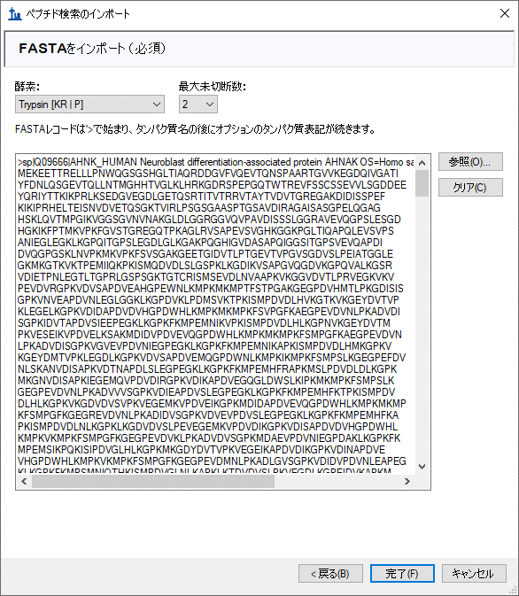
Skylineはコンピュータを使ってこのファイルにある11個のタンパク質を消化し、インポートしたペプチド検索結果での一致スペクトルを使ってFASTAファイルから50個のペプチドとペプチド価を持つ51個のプリカーサーの追加を提案します。
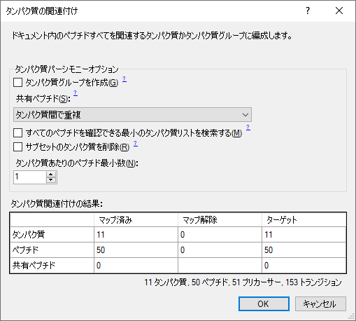
Skylineが2つのWIFFファイルのインポートとそこからのクロマトグラムの抽出を開始します。
進行状況は以下のように表示されます。
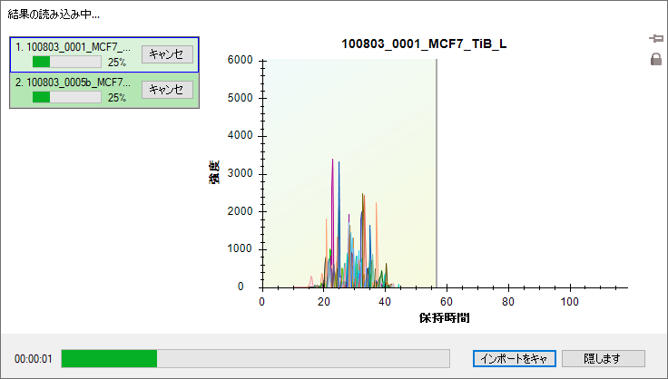
インポートが完了したらクロマトグラムデータを吟味する前に、まず今回作成したスペクトルライブラリの詳細を見てみましょう。
ペプチド検索結果をもとにMS1フィルタのためのスペクトルライブラリ構築を新たにする場合は作成したライブラリに保持時間情報が含まれていることが必須となりますので、必ず確認してください。[ ペプチド検索のインポート ] ウィザードを使用するメリットはライブラリ作成に必要な情報が欠けていることを自動的に通知するシステムがある点です。
MS1フィルタでのピークの選択とピークの推定（もしくは同定）に必要な保持時間情報が作成したライブラリに含まれているかをチェックするため以下の手順を実施します。
ここでライブラリでヒットしたタンパク質の修飾候補リストが表示されます。これらは [ ペプチド検索のインポート ] ウィザードではドキュメントに追加されてなかった修飾です。
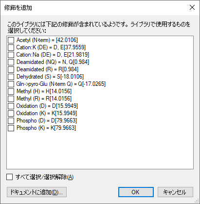
[ スペクトルライブラリエクスプローラー ] でこれらの修飾情報を使用するにしても[ スペクトルライブラリエクスプローラー ] で（その修飾があるペプチドを）ドキュメントに追加しない限り、これらは“現在のドキュメント”へ反映はされません。タンパク質の修飾は今回のチュートリアルでは問題ではないので次の操作に移行します。
[ スペクトルライブラリエクスプローラー ] は以下のように表示されます。
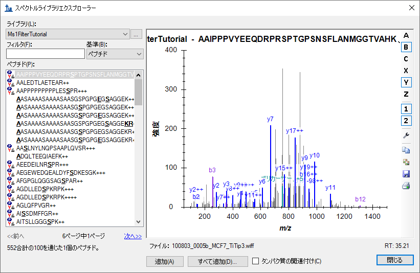
ペプチドリストの中でシークエンス文字列の左側にアイコンの付いていないペプチドは
上記リストで選択しなかった修飾を含むペプチドになります。
スペクトルグラフの下に、「ファイル: 100803_005b_MCF7_TiTip3.wiff」および「RT: 35.21」と表示されています。「RT:」は保持時間情報で、この場合は35.21minとなります。 また「ファイル:
100803_005b_MCF7_TiTip3.wiff」は表示されているMSスペクトルがSkylineにインポートされたファイルに正しく紐づけされているということを示しています。「ファイル
」名とインポートしたファイル名を完全に一致させる必要はありません。Skylineでは多くのペプチド検索パイプラインで生の装置データがmzXML、mzML、MGF、MS2などのフォーマットに変換されます。通常Skylineは「basename.mgf」と「basename.wiff」との一致、すなわちベース名（ファイル名。この場合はbasenameと表示されている）の一致を検索します。
パイプラインには柔軟性が必要とされることが多く、「BASENAME.mzML」が「Basename.RAW」のように大文字と小文字の区別なく一致の検索が行われます。また複数のドット拡張子の処理も含まれています。例えば、「basename.c.mzXML」と「basename.raw」は一致することになります。ただし、「F011852.dat」のようにSkylineにインポートするデータファイルとベース名を共有できない場合は、検索パイプラインの見直しを検討するか（別の検索を使用するなど）、Skylineチームと協力してこの問題を解決することを検討してください。またMascot
.dat
ファイルについては、別途Skylineウェブサイトの「Mascot検索で見つからないID（Peptide推定）推定」ページを参照することをお薦めします。その他の問題については、Skylineサポート掲示板（[
ヘルプ ] メニューで [ サポート ] をクリック）に、問題を投稿することをお薦めします。
ここで、下向き矢印キーを押して別のペプチドを選択すると、「ファイル: 」値および「RT:」
値が変わります。MS/MSスペクトル、そのソースファイルや保持時間を確認したら、以下の操作を行って作成したドキュメントへ戻ります。
Skyline [ターゲット] 表示に50個のペプチドが表示されます（ステータスにカウントで表示されます）。
Skylineドキュメントは以下のようになります。
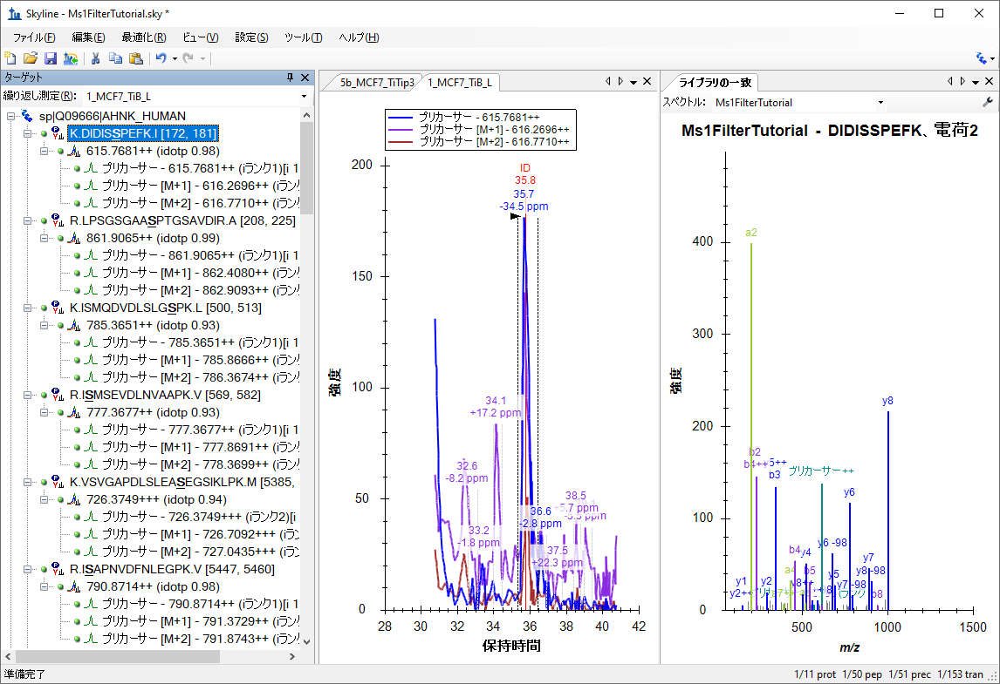
このドキュメントはMS1フィルタ向けの設定で、DDAモードでの測定結果2件がインポートされています。インポートウィザードで [ MS/MSのIDの時間（5分）のスキャンのみを使用します ]設定のため、このビューのクロマトグラムの表示時間範囲が約10分（31～41分）となっています。SkylineドキュメントをMS1フィルタ向けに設定しているため、プロダクトイオンである（b-イオンとy-イオンなど）が表示されるSRM測定結果のMS/MSスペクトラにペプチドDIDISSPEFKのプリカーサーイオン - 615.7681++と同位体イオン（[M+1] - 616.2696++、[M+2] - 616.7710++）が表示されますので注意してください。
有用なサマリーグラフで、測定結果全体でのピーク面積を比較できます。
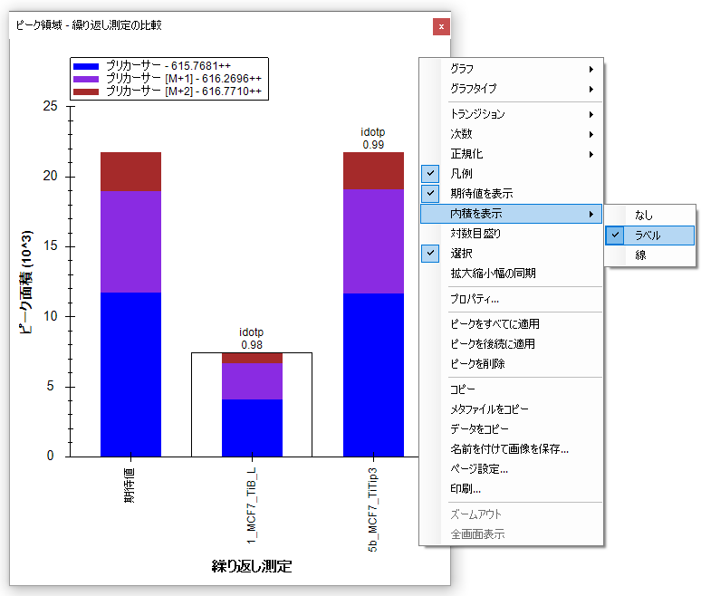
以下の操作で[ ピーク面積 ] ウィンドウを好きな場所にドッキングすることができます。
Skylineファイルは以下のようになります。
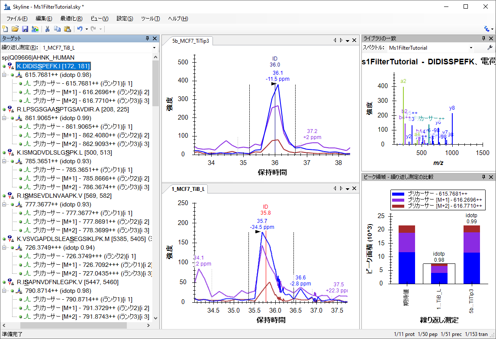
クロマトグラム表示には、すべてのプリカーサーとその同位体イオンM（青）、M+1（紫）、M+2（赤茶）のMS1イオンクロマトグラム（Extracted ion chromatogram）が表示されます。SRM用にSkylineを使用してきた人は見慣れているかもしれませんが、選択したピークの保持時間の下には質量誤差が新たに表示されます。これはクロマトグラム中のすべての積分ポイントにおける質量誤差の加重平均となります（この場合、Mまたは青線のもの）。質量誤差が表示されない場合はクロマトグラム表示で右クリックして [ 質量誤差 ] をクリックします。ここで使用しているデータは（現在では古いバージョンである）QSTAR Eliteのものであり質量精度（Mass Resolution）は最新の高分解能装置で期待できるほどのものではありません。
またイオンクロマトグラム上にID注釈（保持時間）のある縦線が表示されています。IDは表示されているMS/MSスペクトルのクロマトグラム上での保持時間を指し、このターゲットペプチドが信頼性をもって同定されていることを示しています。5b_MCF7_TiTip3ウィンドウ上の赤線（ID 35.8）はこれが [ ライブラリの一致 ] 表示で現在表示されているMS/MSスペクトルのクロマトグラム上での位置（保持時間）であることを示します。グラフ上部のIDをクリックすると、[ ライブラリの一致 ] 表示に5b_MCF7_TiTip3繰り返し測定の同定されたスペクトルが表示されます。これらは以前インポート時に作成したライブラリに保存されています。また繰り返し測定名および保持時間（36分）は（ IDをクリックする前に選択された）ライブラリ（この場合はNon-Redundant library）から得られた最良スペクトルではなく、[ ライブラリの一致 ] 表示の上部にある [ スペクトル ] ドロップダウンリストからの選択となります。IDをクリックするか[ スペクトル ] ドロップダウンリストを使用して2つのMS/MSスペクトルを比較して見ると、これらの2つのスペクトルがかなり類似していることがわかります。
本ドキュメント内の他の50個のペプチドをいくつか精査する前に以下の操作を行います。
次に [ ターゲット ] ウィンドウにてキーボードの下向き矢印キーを使用して1つずつペプチドを選択します。最初の3つのリン酸化ペプチドについては、それぞれ各繰り返し測定で1回同定されており、 [ ライブラリの一致 ] スペクトルグラフでは、「-98」（-H3PO4）のニュートラルロス（Neutral loss）も複数見られます。
上から4番目のペプチドISMSEVDLNVAAPKには、繰り返し測定5b_MCF7_TiTip3のみにIDが付いていることがわかります。繰り返し測定1_MCF7_TiB_Lのピークは、5b_MCF7_TiTip3のIDの保持時間のアライメントによって選択されました。アライメントされたIDを確認するため次の操作を行います。
繰り返し測定1_MCF7_TiB_L のピーク積分境界の内側に水色の線が表示されます。このクロマトグラムを見ると
ピークトップが水色の線より左側にあります。これを修正するため以下の操作を行います。
クロマトグラム表示は以下のようになります。
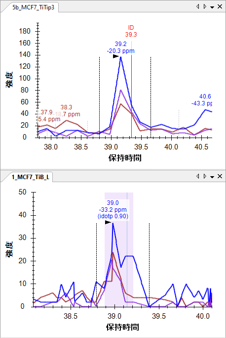
保持時間アライメントがどのように動作しているのかを知るため、以下の操作を行います。
Skylineには以下のようなウィンドウが表示されます。
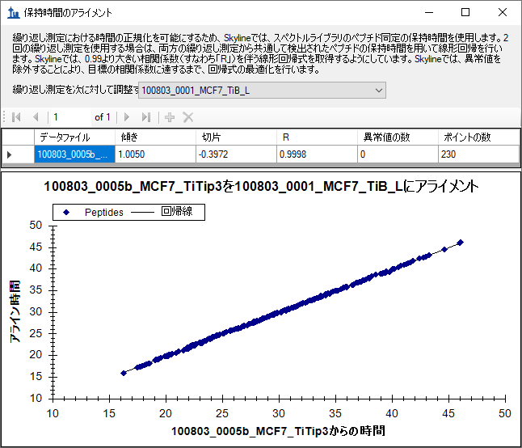
このウィンドウに保持時間のアライメントに使用した線形回帰の（各測定間での）各ポイントが
表示されます。スペクトルライブラリ内の各スペクトルのソースファイルやその他すべてのスペクトルソースファイルからこのような線形回帰が計算されます。測定結果が2つ以上存在する場合ですが[
繰り返し測定] ドロップダウンリストで選択されているもの以外のすべての結果が1行ずつ表示されます。上図のようにある測定でIDが存在しない場合でもピーク選択改善のため、計算された一次方程式を用いて、各測定間でのMS/MS
ID時間マッピングができます。保持時間スケール間マッピングに線形回帰を利用する場合はiRT保持時間予測チュートリアルをご覧ください。
2回の測定における保持時間の再現性は、傾き1.005、切片-0.3972、相関係数（R）0.9998のためかなり良好であることがわかります。当該フォーム上部にあるパラグラフで述べられているように、Rが0.99未満の場合、SkylineはRが0.99より大きい一連のペプチドが見つかるまで自動的に異常値を破棄し、その後一次方程式が表示されます。
この回帰は230個のポイントに基づき計算されていることに気付かれたかもしれません。ドキュメントには50個のペプチドしかないのですが、50個すべてがどの測定でも同定できたわけではありません。構築したこのライブラリには合計552個のペプチドがあり、多くは本ドキュメントで使用されない修飾も含んでいます。つまり、552個中230個のペプチドはどちらのファイルでも同定されたということです。Skylineはこの回帰分析を行うにあたり、2つの検索結果ファイルどちらにも存在するIDすべてを利用しようとします。1回の測定に複数のIDがある場合は保持時間が早いIDが選択されます。これは、保持時間の長いペプチドの方が比較的安定していることを重視しているためです。（ペプチドがカラム洗浄工程で再び溶出される例もあります）。
このようにSkylineではドキュメントにある50個のペプチドを以下の手順で素早くすべて確認することができます。そのためには [ ターゲット ] 表示をクリックし、下向き矢印キーを使って各ペプチドを順に選択してください。50個あるペプチドのうちどれが現在選択されているかは、 Skylineウィンドウ右下にあるステータスバーで確認できます（下図の場合は4番目のペプチド（51個中）、4番目のプリカーサー（52個中）、10番目のトランジション（156個中）が選択されていることになります）。
ペプチドISMSEVDLNVAAPKの下には、 ピーク積分が可能なペプチドが4つあります（VSVGAPDLSLEASEGSIKLPKのように5b_MCF7_TiTip3に対して微修正されたものもあります）。両測定でIDのつくペプチドもあれば 、1つの測定でしかIDがつかないものもあります。Skylineはアライメントを利用して正しいピークを選びます。
9番目のペプチド、SSKASLGSLEGEAEAEASSPKについては、測定1_MCF7_TiB_LではペプチドIDがつかず、ピーク面積積分も多少ずれています。
|
5b_MCF7_TiTip3 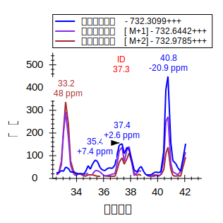 |
1_MCF7_TiB_L 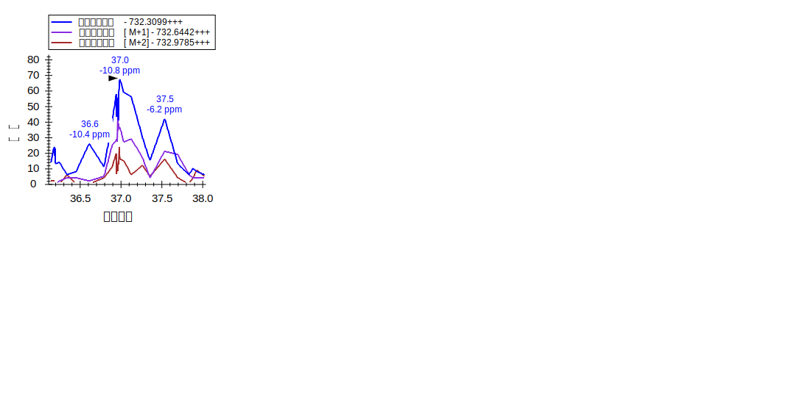 |
スクロールホイール（マウスホイール）で（手前にスクロール）、5b_MCF7_TiTip3のグラフと同じピークが見えるまで、1_MCF_TiB_Lのグラフをズームアウトします。
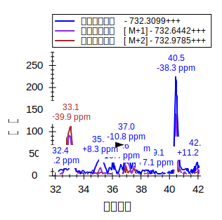
これはクロマトグラフィーデータを扱う際に非常に重要なことです。ターゲットペプチドが一連の測定において毎回同じような時間に溶出すると予想されるますが、これは他のペプチドでも同じです。一方で、共溶出の可能性にも注意しましょう。ターゲット（37分）の両側（33分および40.5分）にある2つのピークは実は2つの他のペプチドによるピークとなりますが、もしターゲットペプチドと共溶出した場合には干渉を考慮せねばいけません。また逆に共溶出しない場合でも、他のペプチドの由来で再現性あるピークが、ピーク強度の低いターゲットペプチドの保持時間判別に役だつことがあります。クロマトグラム抽出範囲内に検出されるペプチドがより多くなるため、MS1フィルタのような選択性が低いメソッドでは特に効果を発揮します。
以下の操作を行って1_MC7_TiB_Lの積分範囲を修正します。
ピークのidotp（同位体の内積）値が0.87から0.9に改善され、また質量誤差もわずかですが-10.8ppmから-9.4ppmに改善されたことが [ ピーク面積 ] グラフで確認できます。
他のペプチドの解析に進む前に、抽出クロマトグラムにより取り込まれた別の2つのピークを検討しましょう。40.5分のピークでは3つのプリカーサーチャンネル（M、M+1、M+2）すべてにおいて、良好なシグナルが得られています。ただし、質量誤差を見ると、予測される質量よりも低質量側にずれていることがわかります（-20.9ppmおよび-38.3ppm）。
Skylineはこれらのピークを選択し、[ ピーク面積 ] のidotp値が以前に選択されたピークよりも低い（0.9および0.99に対して0.86および0.87）ことが表示されます。
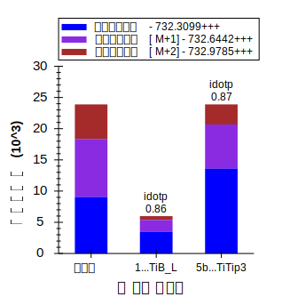
棒グラフ上の[ 期待値 ]分布をみるとM+1ピークとM+2ピークがターゲットペプチドに対して予測される同位体分布より小さいことがわかります。このピークのペプチドは、約37分にもMS/MS IDがあるターゲットペプチドより炭素数が少なく13Cの取り込み数が小さいためと予想されます。
次に33分のピークを見てみると、ターゲットペプチドのモノアイソトピックm/zのシグナルが一切見られません。一方でM+1とM+2はターゲットペプチドのMとM+1の予測同位体分布とよく似た同じ強度のピークがあります 。5b_MCF7_TiTip3の質量誤差は+25.8ppmであり、完全に積分された場合の1_MC7_TiB_Lの質量誤差は+5.6ppmです。40.5分のピークほど悪くはありませんが、それでも、平均誤差+15.7ppmは37分のピークの平均誤差-3.5ppmよりも大きいずれとなっています。
33分のピーク同位体分布問題を理解するため以下の操作を行います。
Skylineに以下のようなポップアップが表示されます。
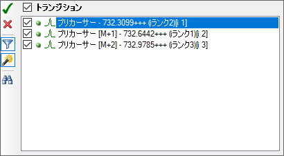
これら3つのプリカーサートランジションしか表示されない場合は以下の操作を行います。
この操作でこのペプチドプリカーサーについて考えられるすべてのトランジションがSkylineに表示されます。
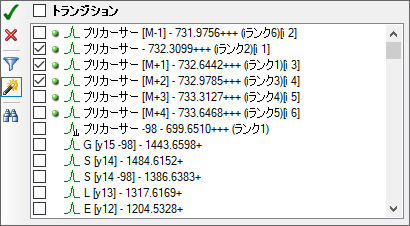
緑の丸はクロマトグラムデータがSkylineに存在するトランジションを意味します。同位体分布があると予測されるピーク（すくなくても全体の1％以上のピークとなります）に対してクロマトグラムが自動的に抽出されます。また[M-1]のクロマトグラムも自動的に抽出されますが、干渉を受けていない正しく選択されたピークでは通常このm/zのシグナルは検出されません。
これにより、M+3とM+4のクロマトグラムが追加表示され、33分のピークで37分のピークより多くのシグナルが表示されるようになります。Skylineでのあらゆるクロマトグラムデータ解析作業で保持時間再現性がどれだけ重要かは言うまでもありません。
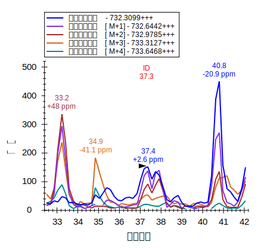
33分のピークはターゲットに非常によく似た元素組成の別のペプチドであり、モノアイソトピック質量が1ダルトン大きい3価のペプチド（M+3のデータから見て）であることがわかります。
クロマトグラム抽出元のMS1スペクトルも、単純なポイント＆クリックインターフェイスを使って精査できます。これで33.2分のピークと37.4分のピークの違いも迅速に把握できます。これを行うにあたり、以下の操作を行います。
Skyline上で以下のようなプロットのフルスキャンが表示されます。
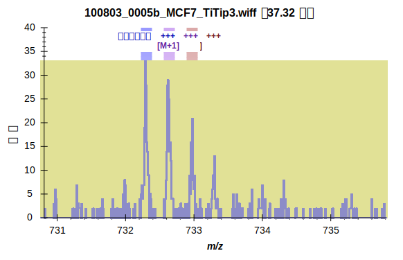
表示が以下のように変化します。
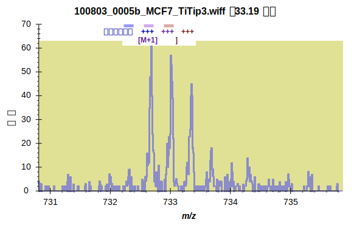
クロマトグラフで観測された違いもこのMSスペクトル上で明確になります。
Skylineを利用することで容易に共溶出するペプチドの影響も検出することができます。例えば、二重リン酸化ペプチド（リン酸化部位が2か所）ASLGSLEGEAEAEASSPKGKのクロマトグラムの場合、
|
5b_MCF7_TiTip3 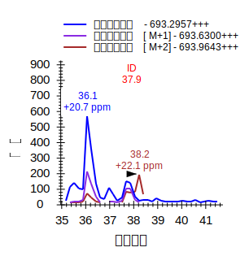 |
1_MCF7_TiB_L 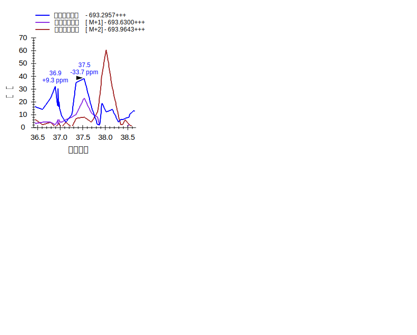 |
1_MCF7_TiB_LではなくMCF7_TiTip3のペプチドにIDがあります。1_MCF7_TiB_Lにあるピークは、5b_MCF7_TiTip3のIDとのアライメントに基づいて選択されました。M+2クロマトグラムでは、ピークからその右側までからの干渉はほとんどなさそうであり、最も大きなピークでの質量誤差は-33.7ppm（画面右37.5分）となっています。マウスのスクロールホイールを使用して再度ズームアウトすると36分のあたりに、質量誤差が+20.7ppmでidotp値が0.78のもの（画面左）と、質量誤差が+27.5ppmでidotp値が0.76の非常に似たピークが含まれています（これは保持時間IDをクリックしてピークを選択した後に、[ ピーク面積 ] 表示すると見られます）。
5b_MCF7TiTip3の積分境界では共溶出した夾雑物のM+2シグナルが含まれているようです。実際このクロマトグラムの他のピークは保持時間が非常に近く手作業で積分（マニュアル積分）してもそのシグナル排除は不可能に見えます。調べてみると、idotp値0.94および質量誤差-9.7ppmのピーク積分が得られます。
上記M+3とM+4の追加を利用すると、干渉ピークはおそらく質量が2 Da大きい3価ペプチドであろうと予想できます。
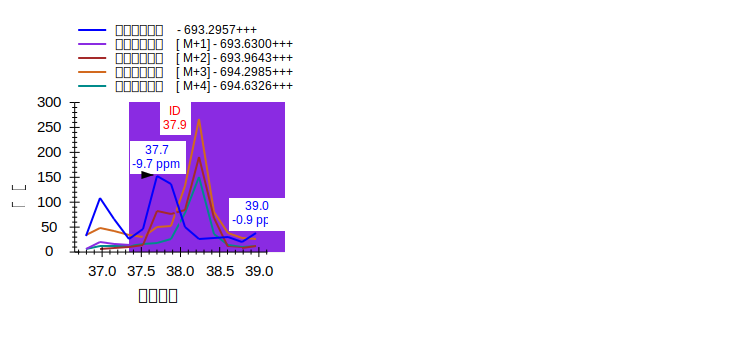
さらに2つのペプチドの下にあるAEGEWEDQEALDYFSDKESGKではより強い干渉が見られ、そのシグナルの排除はさらに難しくなっています。
|
5b_MCF7_TiTip3 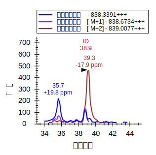 |
1_MCF7_TiB_L 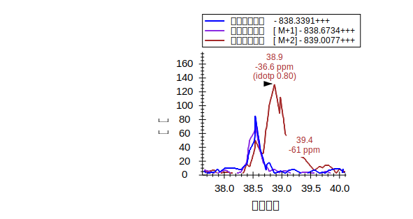 |
M+3、M+4、M+5の各クロマトグラムを追加することで、この質量と保持時間の組み合わせがプリカーサーイオンのクロマトグラム上でどれだけ複雑かがはっきりわかります。
|
5b_MCF7_TiTip3 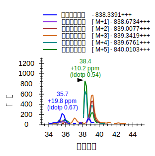 |
1_MCF7_TiB_L 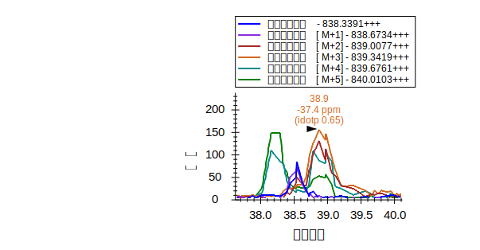 |
このペプチドに対して明確なピーク積分値を得るためMとM+1を除くすべてのクロマトグラムを削除します。その後積分境界を調整します。より選択性の高いメソッドを使用する方法もありますが、MS1スペクトルのみからでも有用な定量データを多数取得することは可能です。定量解析については、明確な干渉のない、ランキングも高いプリカーサーイオンに絞ることをお勧めします。
本チュートリアルのデータで見てきたようにピーク同定を工夫すれば使用すると、干渉の影響を小さくすることもできます。
ペプチドの精査を続けます。わずかな積分調整を1つ行うだけで22番目のペプチド ALVEFESNPEETREPGSPPSVQRまで到達します。
ドキュメントにはALVEFESNPEETREPGSPPSVQRおよびその下のALVEFESNPEETREPGSPPSVQR（どちらも879.0727のプリカーサーm/zを有する）が含まれています。検索エンジン（この場合はProtein Pilot）が前者を5b_MCF7_TiTip3で、後者を1_MCF7_TiB_Lで同定しました。しかしクロマトグラムを見ればどちらも約32.5分で同定されているピークとなっています。
興味深いことに、2つのピークは同じm/z値（Isobaric）でかつ保持時間が非常に近接しています。さらに良く似た同位体分布をもっていることがわかります。
|
5b_MCF7_TiTip3 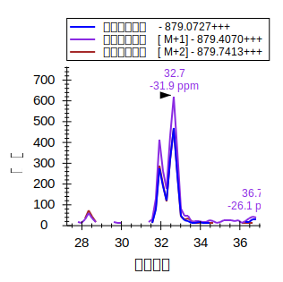 |
1_MCF7_TiB_L 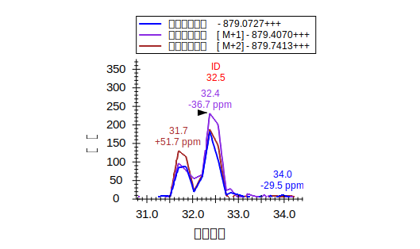 |
同位体分布と質量誤差を見ると、1_MCF7_TiB_Lにおける2つのピーク（どちらも31.5分と33分の間に出現しています）は5b_MCF7_TiTip3でのピークと異なるように見えますが、これは単に実験のばらつきが原因である可能性もあります。そこでM+3、M+4、M+5を追加してみると、両方のデータにおいて0.9を超えるidotp値が維持できることが確認できます（再度それぞれを積分して [ ピーク面積 ] 表示を確認し[ 元に戻す ]）。このペプチドにはリン酸化部位が4か所あるため、2つのピークは同一ペプチドでリン酸化部位が異なるものである可能性、あるいはリン酸アイソフォームの溶出プロファイルが重複している可能性などが考えられます。MS1フィルタ使用時には検索エンジン出力結果を鵜呑みにせずに、考えられるアイソフォームを慎重に評価することも行ってください。
ペプチド25まで下がっていくと、このドキュメントで最長かつ初めての4価のペプチドプリカーサーであるYGPADVEDTTGSGATDSKDDDDIDLFGSDDEEESEEAKRが見つかります。このペプチドは非常に大きく、その同位体分布も今まで見てきた典型的な2価のペプチドや3価ペプチドとかなり異なります。この場合13C原子取り込みのないモノアイソトピックペプチドM+はM+1やM+2よりも存在率が低くなると予測できます。実際クロマトグラムでも予測される分布のidotp値が1.0および0.99になっています。
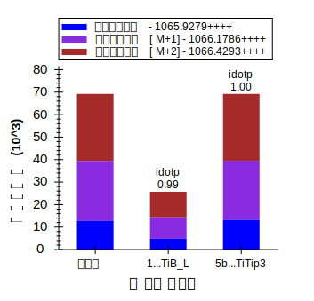
今までと同じようにトランジション選択リストを利用し、M+3からM+7までのクロマトグラムを追加します。これらのイオンはすべて同位体分布全体で1%以上となっており、idotp値も高めの0.98であることがわかります。
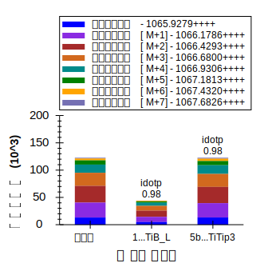
（クロマトグラムグラフをみると）このペプチドは本ドキュメント内で唯一、1回の測定で複数回検出、同定されたものであることがわかります（5b_MCF7_TiTip3において3回）。
以下の操作を行ってクロマトグラムを同じスケールにすると、これらのIDが繰り返し測定間でどうアライメントされているかわかりやすくなります。
クロマトグラムは以下のようになります。
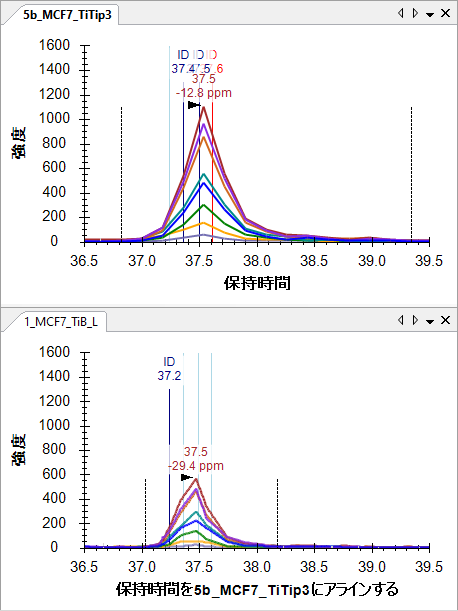
クロマトグラフの抽出元MS1スペクトル内の同位体分布を確認するため以下の操作を行います。
以下のプロットで[ フルスキャン ]ビューが表示されます。
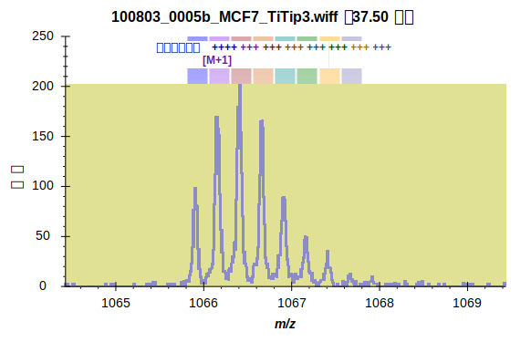
アライメントによりクロマトグラフのプロットでIDとピークがきれいに並びました。Y軸自動スケーリングによる拡大縮小幅の同期をオフにすればピークの相対的な高さもわかります。
クロマトグラム中のID注釈をクリックすると、検索エンジンがこのペプチドとして同定したMSスペクトルも確認できます。別のやりかたとしては[ ライブラリの一致 ] 表示の上部にあるドロップダウンリストをクリックし、矢印キーを使用して一致したMSスペクトルのページを上下に移動する方法もあります。異なる測定からのMSスペクトルが同一ペプチドからのものであると確認できるまでもう少し解析が必要なこともあり得ます。
5b_MCF7_TiTip3（37.61分）
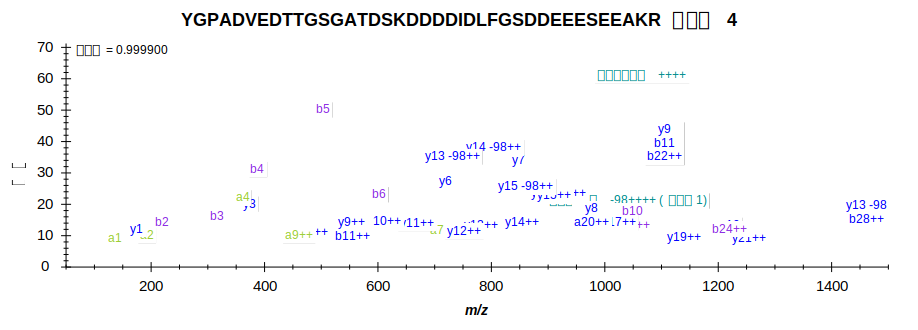
1_MCF_TiB_L（37.03分）
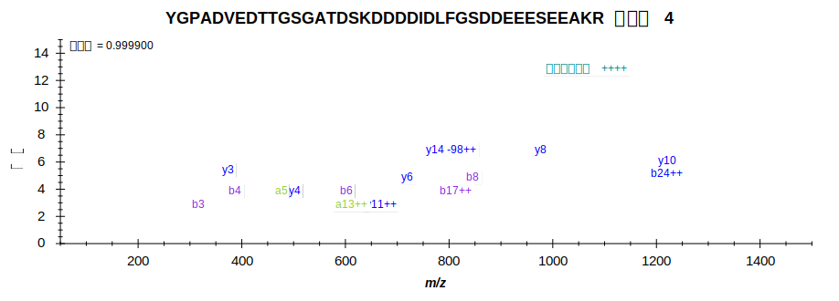
ただし、2つの測定のクロマトグラムピークは同一のペプチド分子を測定していると大いに確信できるはずです。
ペプチドDQVANSAFVERのピーク近傍には別の興味深い干渉があります。
|
5b_MCF7_TiTip3 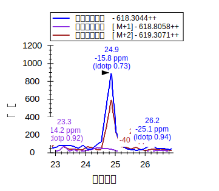 |
1_MCF7_TiB_L 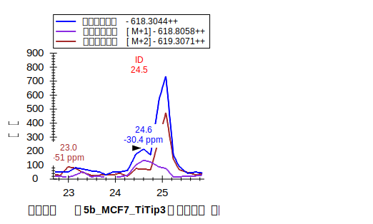 |
1_MCF7_TiB_Lでは、ペプチドは24.5分で同定されましたが、どちらの繰り返し測定でも、25分のあたりで強い干渉ピークが検出されています。しかしながら、干渉が観察されるのはMおよびM+2のみです。ターゲットペプチドは2価であるため、これは干渉１価ペプチドと予想されます。5b_MCF_TiTip3ではターゲットのシグナルが弱い一方、く干渉シグナルは相対的に強く、ターゲットのピークはM+1クロマトグラム上でも検出、同定が難しくなっています。
どちらの繰り返し測定においても取得における干渉は深刻な問題であるためこのペプチドはMS1定量化には適用できないと判断すべきです。もしこの特定のペプチドをどうしても測定したい場合は、PRM（Parallel reaction monitoring）やSRM（Selected reaction monitoring）など選択性の高いメソッドでの測定をお勧めします。
＊SRMもしくはMRMではプリカーサーから生じるプロダクトイオンの中で選択されたもののみを測定するのに対し、PRMでは選択されたプリカーサーから生じるすべてのフラグメントイオンを測定する
以下の7つの問題についてはこれまで学習してきたことのおさらいです。以下の問題を理解し解決できる力は身に付けられているはずです。
ドキュメントにある50個のペプチドの解析が一通り完了すると、すべてがかなり良好な積分結果が得られているはずです。先へ進む前にまずは現在のドキュメントを保存します。
次に、以下の手順を実施して、このドキュメントと無関係なクロマトグラムデータを破棄し、ドキュメントをできる限り小さく共有しやすくなるようにします。
[ 結果を最小化 ] フォームは以下のようになります。
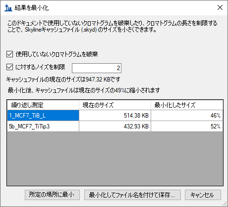
フォームはこの操作によってキャッシュファイルのサイズが約947KBから約464KB、つまり現在のサイズの49%に縮小される見込みであることを示します。
再度Shift+F11を押して縮小すると、この新しいドキュメントのペプチドのクロマトグラムが確認でき、積分境界から保持時間が両方向に2分拡大されていることがわかります。
クロマトグラムの最小化は、大規模な実験のためにドキュメントを作成する際に非常に便利です。ドキュメントは論文の補足データとしても共有ができます。生データのオンライン利用ももちろんできますが、最小化されたSkylineドキュメントの方がダウンロードも楽でかつ多面的なデータを提供することが可能です。
上述のDDA法を用いた複数の繰り返し測定ではMS/MSスペクトルデータが不足しており、各1回の取得繰り返し測定ではMS/MSでのペプチド同定がされないケースがあることも示されています。この問題については、既に説明したように、MS1フィルタでRTアライメントを使用すると解決可能です。ただしプロファイル型の測定から多数のターゲットペプチドを同時定量解析したい場合は、SkylineでDDA実験用にインクルージョンリストメソッドをエクスポートし、「インクルージョンリストを用いたスクリーニング」2を取ることもできます。このインクルージョンリストを用いたメソッドでは、DDA法と比べてターゲットペプチドを測定できる可能性がより高くなります。
＊DDAでは感度が低く選択されない場合は、インクルージョンリストにあらかじめ測定したいペプチドのプリカーサーイオンm/zを入れておくことで、感度に影響されることなくデータ取得ができます。
チュートリアルSkylineドキュメントから次のMS1フィルタ用のインクルージョンリストメソッドをエクス
ポートするため以下の手順を実施します。
SCIEX AnalystまたはThermo Xcaliburのいずれかの装置ソフトウェアがインストールされている場合を除き、装置メソッドエクスポートについて行う作業はこのように行います。Skylineからのすべてのメソッドエクスポートはメソッドを実行しようとする装置の制御用コンピュータ上にあるSkylineのインスタンスのエクスポート機能を実行すれば可能です。サポート対象の装置をお持ちの場合も、必要に応じて上記手順を実行して問題ありません。
本チュートリアルでは、DDA実験データのMS1スキャンから定量情報を抽出するための機能について学びました。元々SRM解析のために考案されたSkylineの既存の機能の多くがそのままMS1抽出クロマトグラムに転用できます。その他のSkylineチュートリアルで提示される資料（動画資料も）での学習もお奨めします。MS1スキャンからクロマトグラムピーク面積（プリカーサーイオンのピーク面積）を抽出して定量するという昔から存在している手法をSkylineはより効率的かつ視覚的に実現しているということです。MS1定量を他の定量ツールで行った場合もSkylineを使用して結果の確認、検証が可能です。さらにSkylineでDDAデータを精査してDIAなど異なる測定メソッドのスペクトルライブラリ作成をするというのもよいでしょう。データの品質、問題点もよりよく理解できるようになるでしょう。
MS1フィルタの原著論文で実際に使われたデータセットを自分で確認したい場合は1以下のリンクからドキュメントをダウンロードしてください。
http://proteome.gs.washington.edu/supplementary_data/MS1_Filtering/minimized/
必要なSkylineドキュメントおよび生データがすべて含まれています。
1. Schilling, B. et al. Platform-independent and Label-free Quantitation of Proteomic Data Using MS1 Extracted Ion Chromatograms in Skyline APPLICATION TO PROTEIN ACETYLATION AND PHOSPHORYLATION. Mol Cell Proteomics 11, 202–214 (2012).
2. Jaffe, J. D. et al. Accurate Inclusion Mass Screening. Mol Cell Proteomics 7, 1952–1962 (2008).